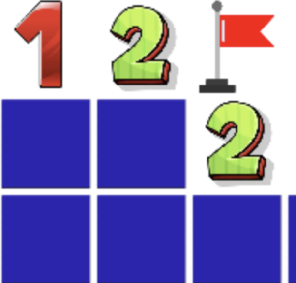
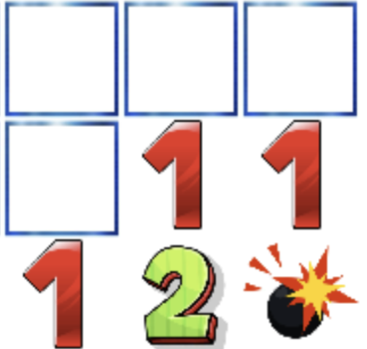
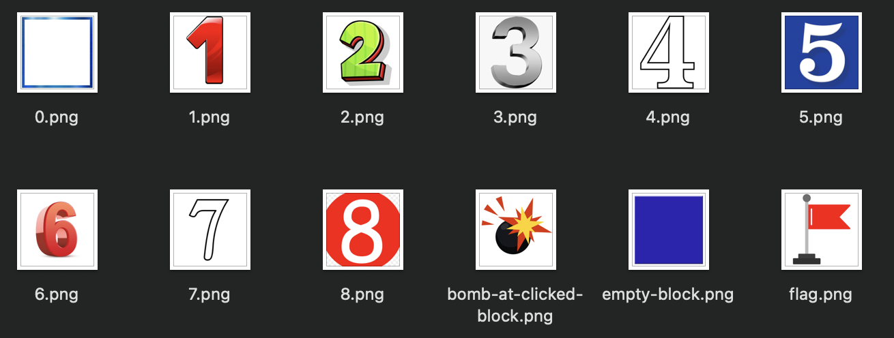
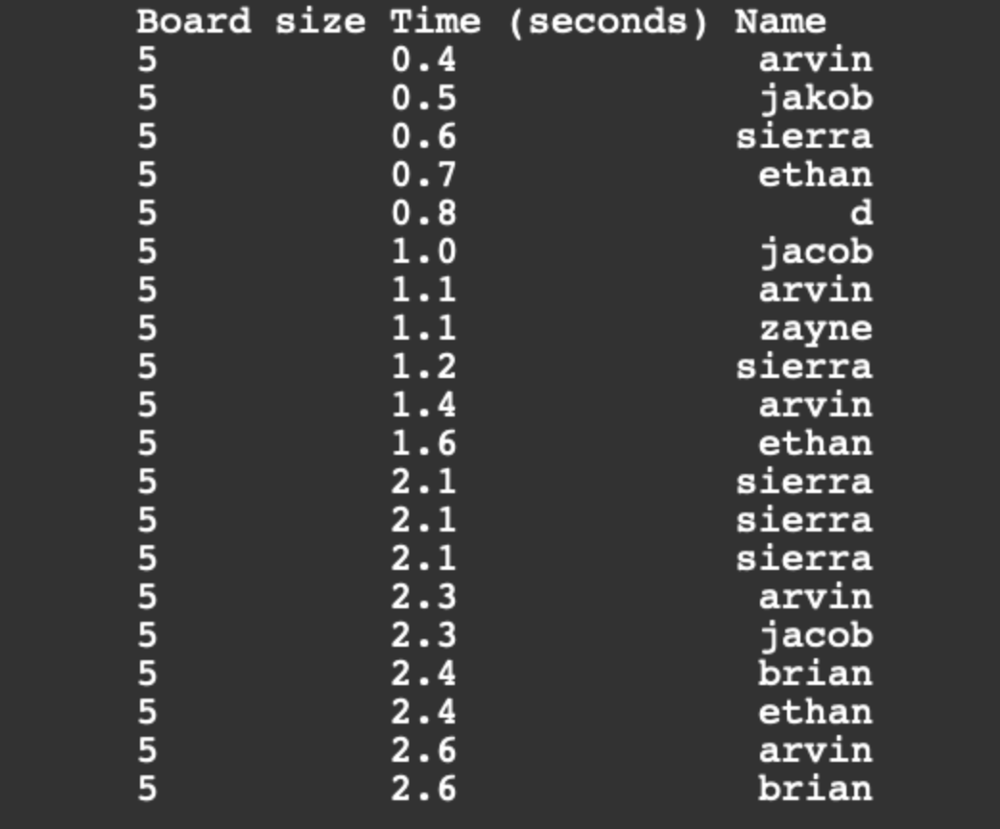
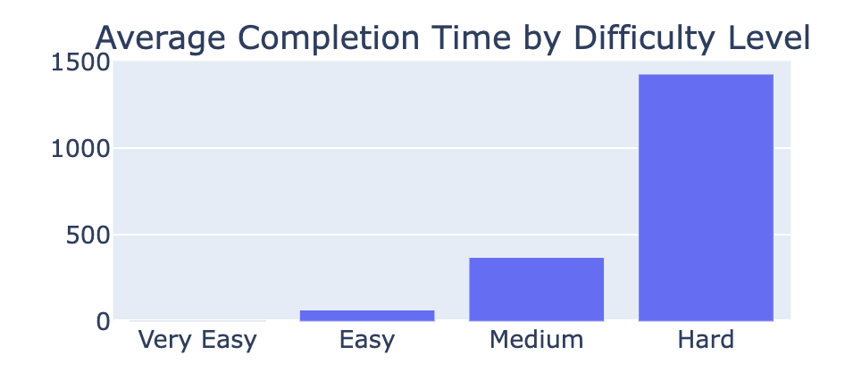

def setboard(self):
self.board = []
for row in range(self.size[0]):
row = []
for col in range(self.size[1]):
hasbomb = random() < self.prob # of the random number is less than the probability,
# this will read true and a bomb will be placed there
# otherwise will be false and no bomb will be placed there
if ( not hasbomb): # if tile doesnt have a bomb
self.numberofnonbombs = self.numberofnonbombs + 1
tile = tile_class(hasbomb) # sets the tile using tile class initiliazer
row.append(tile)
self.board.append(row)
self.setneighbors()Overview of Game Code
Now that we understand the function of our project, let’s take a look at how it all works. The code is split up into several files. We will start by giving an overview of all the files used to make the pygame Minesweeper game itself. We will later discuss the code for the database and plots.
Tile.py
Tile.py defines the tile_class. This class is used for each individual tile in the larger pygame board. Each blue square is a tile. Each tile can have 4 different states, unclicked, cleared, flagged, and bombed.
The below images show the states. Blue tiles are unlicked, the numbered/white tiles are cleared, the flag is flagged, and the bomb is bombed.


Board.py
Board.py establishes the board class. This class pulls tiles from the tile class and puts them together to create a square board where the user plays on. The board class starts by setting the difficulty which is given by the user: very easy, easy, medium, and hard. Each level has its own board dimensions (size) and probability of each tile having a bomb. After establishing the difficulty, the class then creates the board itself. The code for setting the board is shown below
The function uses nested loops to iterate through the rows and columns of the board, generating a random number for each tile. If the random number is less than the specified probability, a bomb is placed on that tile; otherwise, no bomb is placed. The method also keeps track of the number of non-bomb tiles. Each tile is represented by an instance of a class called tile_class, and the board is a two-dimensional list containing these tile instances. Finally, the method calls another method named setneighbors to establish relationships between neighboring tiles.
Minesweeper.py
Minesweeper.py establishes the minesweeper class which is responsible for most of the functionality of the game. Here’s a summary of the key components:
The minesweeper class is initialized with a game board (board), screen size (screensize), and a leaderboard (leaderboard). The tile size is set based on the game’s difficulty level, affecting the overall size of the game window. Images for different game elements (e.g., bombs, flags, empty blocks) are loaded from the “images” directory and scaled to the tile size. The game loop runs continuously until the game is won or lost. It handles events such as mouse clicks, updates the display, and checks for game-ending conditions. Mouse clicks are processed to determine the tile clicked and whether it was a left or right click. The corresponding action is then passed to the game board. The createboard function renders the current state of the game board on the Pygame window, using images based on the state of each tile. If the game is won, a window prompts the user to enter their username for the leaderboard. If the game is lost, unclicked tiles are revealed, and a message box informs the player of their loss. The submit method is called when the user enters their name after winning the game. It submits the player’s score (board size and time taken) to the leaderboard.
The initializer is written below. This shows how the pygame window and the size of each tile is scaled to properly fit within the baord size and user’s computer
def __init__(self, board, screensize, leaderboard):
self.board = board
self.screensize = screensize
self.leaderboard = leaderboard
difficulty = board.difficulty
if (difficulty == "very easy"):
self.tilesize = screensize[0]//5 , screensize[1]//5
elif (difficulty == "easy"):
self.tilesize = screensize[0]//10 , screensize[1]//10
elif (difficulty == "medium"):
self.tilesize = screensize[0]//15 , screensize[1]//15
elif (difficulty == "hard"):
self.tilesize = screensize[0]//20 , screensize[1]//20
self.loadimages()Below are all the images that are loaded into our Minesweeper game using the loadimages() function.

Overview of Leaderboard Code
The leaderboard uses sqlite3 to create a database has 3 columns: boardsize, time, and name. Each time a user wins a game, they’ll be prompted to enter their name. Then, their boardsize, time it took to finish the game, and user inputted name is uploaded to the database. This database is them visualized whenever the user hits the “View Leaderboard” button. This is shown below.

Overview of Plots Code
To plot game stats, we use Plotly. The data for these plots come from the database established above. An example is shown below.
def visualize_avg_completion_time(leaderboard_df):
"""
Visualize average completion time for each board size using a bar chart.
"""
# Filter leaderboard data for the four specified board sizes
leaderboard_df = leaderboard_df[leaderboard_df['boardsize'].isin([5, 10, 15, 20])]
avg_time_df = leaderboard_df.groupby('boardsize')['time'].mean().reset_index()
avg_time_df['boardsize'] = avg_time_df['boardsize'].map(board_size_mapping) # Map board sizes to difficulty levels
fig = px.bar(avg_time_df, x='boardsize', y='time', title='Average Completion Time by Difficulty Level')
return fig
This is accessed whenever the user hits the “View Plots” button. The plots are then shown in the console running the code.
Conclusion
Our Minesweeper project uses Pygame, Tkinter, and plotly to create an interactive minesweeper game with a functional leaderboard and game stats plots. Our game has multiple difficulties for players to choose from, and interactive plots for players to understand their progress and how they can improve their game. Our project is perfefctly ethical. Since minesweeper is a public